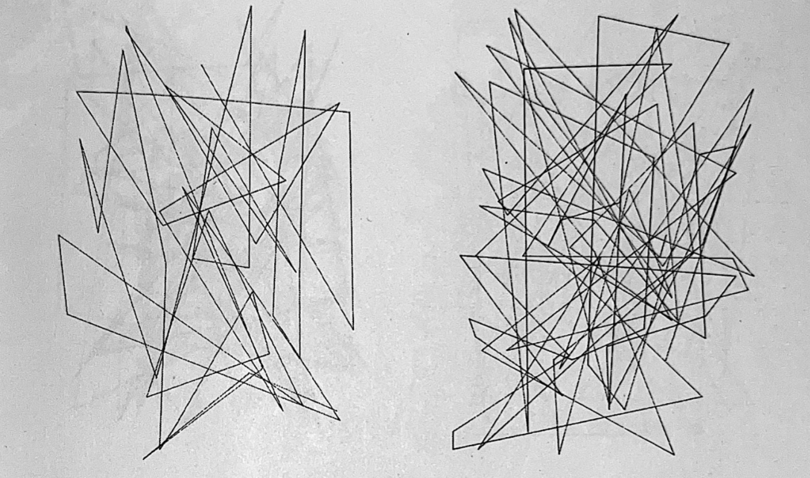
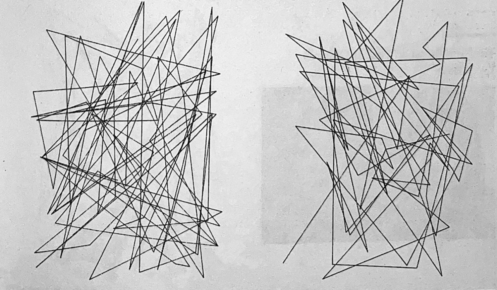

This is my demo from p5.js
different outcomes but comes from the same code.


Here are some history about coding
Publications for enthusiasts provided code for brief lessons on how to program home computers, so-called
"type-ins." Written in BASIC, they played music, drew images, or offered rudimentary games. To launch these
applications, you must manually enter them.
For one thing, prerecorded storage medium (either datasettes or the more expensive floppy disks) were too
expensive for magazines, and even if they were, they failed half the time. Most home computers had between 4 and
64 kilobytes of memory, which could be readily filled by typing. At the time, computer users saw hardware as a
completed product and software as something to study and build.
The typist would obtain vital knowledge by studying from a master and typing in code, creating and correcting
errors.
In the worst scenario, the printed code included mistakes that the typist repeated, or the print was so poor
that critical characters were unreadable.
When mass-producing diskettes became inexpensive, inputting source code seemed pointless.